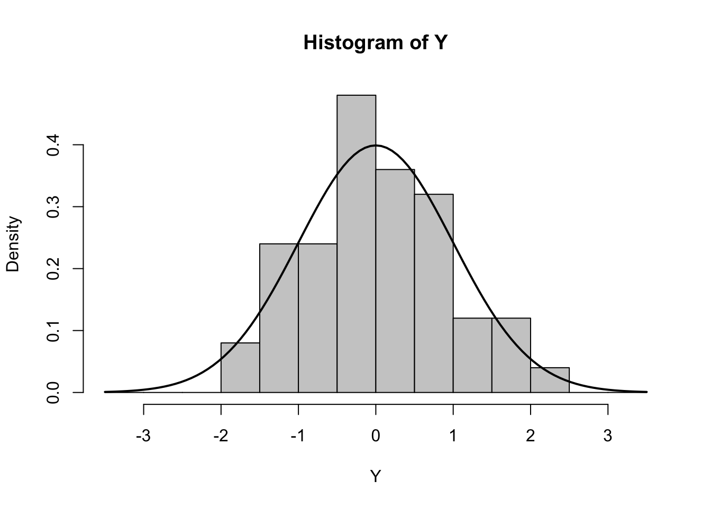
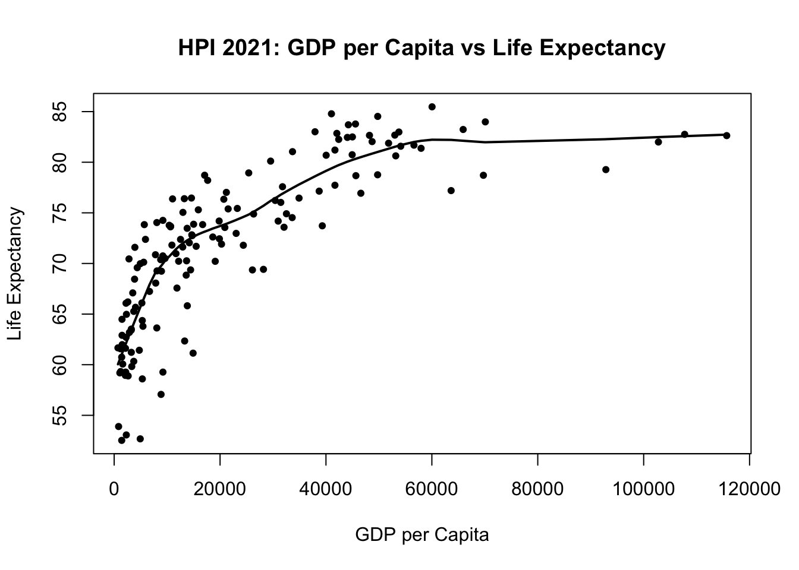
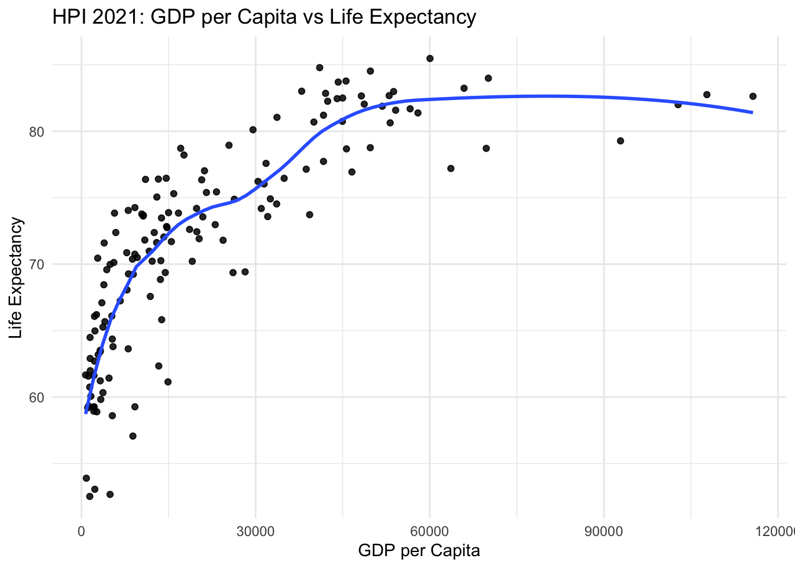

1. Running Murrell-style base R graphics and answering inline questions.
2. Repeating the same plotting grammar on the Happy Planet Index (HPI) 2024 dataset you provided.
Setup
Code
# Packageslibrary(readxl)library(dplyr)library(ggplot2)# Path to local file hp_path <-"/Users/tryphaenahtoisanlu/Documents/Data Visualization/HPI_2024_public_dataset.xlsx"# Read the tidy sheet (header row starts on line 2, so skip=1)hp <-read_excel(hp_path, sheet ="All Data", skip =1)# Quick peeknames(hp)[1:20]
[1] "HPI rank" "Country"
[3] "ISO" "Continent"
[5] "Population" "Year"
[7] "LifeExp" "Ladder"
[9] "National Carbon Footprint (tCO2e)" "CoV adjusted ladder"
[11] "Adj Lad x Life Exp" "Extra HPLY (above min)"
[13] "CoV Adj Footprint" "HPLY/EF"
[15] "...15" "HPI"
[17] "Footprint category" "CO2 threshold for year"
[19] "Change in GDP (2016-2020)" "Change in GDP (2016-2019)"
Code
head(hp, 3)
# A tibble: 3 × 25
`HPI rank` Country ISO Continent Population Year LifeExp Ladder
<dbl> <chr> <chr> <dbl> <dbl> <dbl> <dbl> <dbl>
1 NA Burundi BDI 5 12551. 2021 61.7 NA
2 NA Comoros COM 5 822. 2021 63.4 3.9
3 NA Eswatini SWZ 5 1192. 2021 57.1 NA
# ℹ 17 more variables: `National Carbon Footprint (tCO2e)` <dbl>,
# `CoV adjusted ladder` <dbl>, `Adj Lad x Life Exp` <dbl>,
# `Extra HPLY (above min)` <dbl>, `CoV Adj Footprint` <dbl>, `HPLY/EF` <dbl>,
# ...15 <chr>, HPI <dbl>, `Footprint category` <dbl>,
# `CO2 threshold for year` <dbl>, `Change in GDP (2016-2020)` <dbl>,
# `Change in GDP (2016-2019)` <dbl>, `GDP per capita` <dbl>, ...22 <lgl>,
# ...23 <lgl>, ...24 <lgl>, ...25 <lgl>
Part A — Murrell-style Recap
Below are a few minimal base R snippets to revisit Murrell’s ideas.
# Histogram exampleset.seed(123)Y <-rnorm(50)Y[Y <-3.5| Y >3.5] <-NAhist(Y, breaks =seq(-3.5,3.5,0.5), freq =FALSE, col ="gray80")curve(dnorm(x), add =TRUE, lwd =2)

Note : - pch sets point symbols (0–25; 21–25 respect bg), cex scales size, las controls axis label orientation.
- axis(side=...): 1 bottom, 2 left, 3 top, 4 right.
- par(mar=...): margins in lines as c(bottom,left,top,right).
Part B — With Happy Planet Dataset
We will create comparable visuals on your HPI data.
1) Scatter with smoother: GDP per capita vs Life Expectancy (latest year)
Code
hp1 <- hp %>%mutate(LifeExp =as.numeric(LifeExp),`GDP per capita`=as.numeric(`GDP per capita`) ) %>%filter(!is.na(LifeExp), !is.na(`GDP per capita`))latest_year <-max(hp1$Year, na.rm =TRUE)hp_latest <- hp1 %>%filter(Year == latest_year)# Base R version (Murrell-style)plot(hp_latest$`GDP per capita`, hp_latest$LifeExp,pch =19, cex =0.7,xlab ="GDP per Capita",ylab ="Life Expectancy",main =paste0("HPI ", latest_year, ": GDP per Capita vs Life Expectancy"))lines(lowess(hp_latest$`GDP per capita`, hp_latest$LifeExp, f =0.5), lwd =2)

Code
# ggplot2 version (polished)library(ggplot2)ggplot(hp_latest, aes(x =`GDP per capita`, y = LifeExp)) +geom_point(alpha =0.85) +geom_smooth(method ="loess", se =FALSE, span =0.5) +labs(title =paste0("HPI ", latest_year, ": GDP per Capita vs Life Expectancy"),x ="GDP per Capita", y ="Life Expectancy" ) +theme_minimal()

2) Histogram: Life Expectancy (latest year)
Code
# Base Rhist(hp_latest$LifeExp, col ="gray85", border ="white",main =paste0("Life Expectancy — ", latest_year),xlab ="Years")